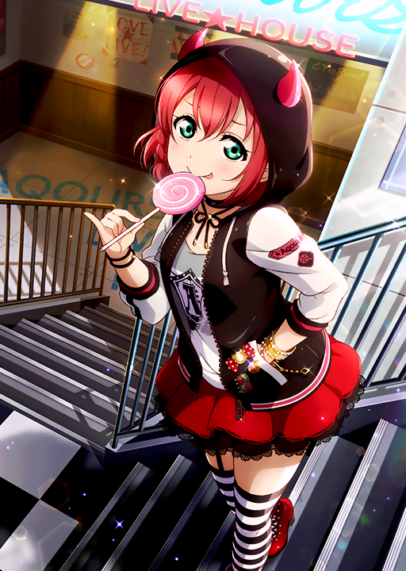
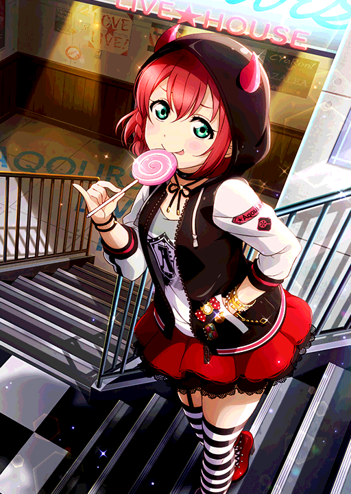
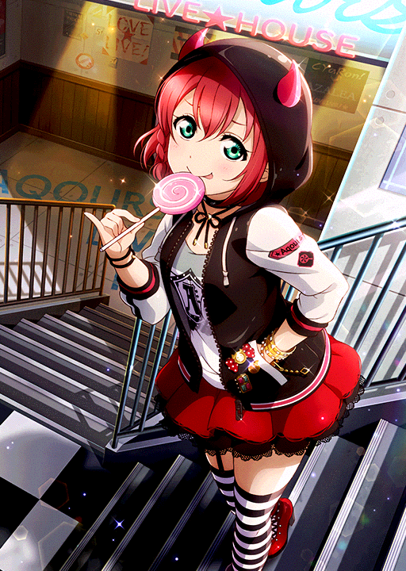
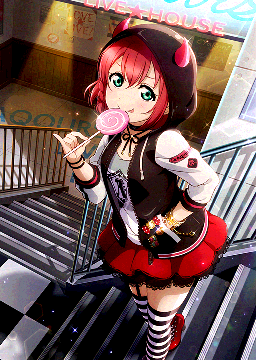

Some people discussing about SIF cards image quality being sucks since New Year Kanan UR. They said somehow KLab change the dithering method used in cards and always uses RGBA4444. I argue that RGB565 for clean UR card are better and actually makes sense (clean UR card doesn't need transparency, but "navi"1 requires transparency).
For sake of legal, all images used here are copyright © 2018 KLab Inc.
Here's the original card image, to be used for comparison (the latest Ruby UR card paired with Yoshiko as I'm writing this):
You can notice the grainy pictures, or noise caused by dithering and RGBA4444 color loss. I start to think that something wrong about the dithering algorithm. Here's the version with selective gaussian blur applied (someone in the discussion do the blur):

Selective gaussian blur does the job looks like, but I said, that waifu2x can achieve something better, but then he doesn't agree and says that waifu2x destroys the edges and some parts of the image. Well, I'm just gonna do it anyway. I tried many different methods, like noise level 1, level 2, noise level 2 then 2x scale then 50% downresize, but I found noise level 1 is already doing the job pretty well and noise level 2 destroys some details as he says before. Here's the image result:
Ok it looks good now, so let's apply RGBA4444 conversion and dithering to the noise removed image. Unfortunately,
ImageMagick can't do RGBA4444 conversion (and any 16bit RGB color conversion) and specify dithering at same time, so I
have to generate the necessary color table (RGBA4444 and RGBA565 for our purpose) and use -remap option in
ImageMagick later. Here's the command that I use to generate the color table:
magick convert -size 256x256 xc:none -channel R -fx "((i*w+j)&15)/15.0" -channel G -fx "(((i*w+j)>>4)&15)/15.0" -channel B -fx "(((i*w+j)>>8)&15)/15.0" -channel A -fx "(((i*w+j)>>12)&15)/15.0" rgba4444.png
magick convert -size 256x256 xc:white -channel R -fx "((i*w+j)&31)/31.0" -channel G -fx "(((i*w+j)>>5)&63)/63.0" -channel B -fx "(((i*w+j)>>11)&31)/31.0" rgb565.png
Now we can tell ImageMagick to use our color table:
magick convert 1489u-w2x-noise1.png -dither none -remap rgba4444.png 1489u-w2x-noise1-rgba444none.png
magick convert 1489u-w2x-noise1.png -dither riemersma -remap rgba4444.png 1489u-w2x-noise1-rgba444rie.png
magick convert 1489u-w2x-noise1.png -dither floydsteinberg -remap rgba4444.png 1489u-w2x-noise1-rgba444fstein.png
And here's the result:

-dither none

-dither riemersma

-dither floydsteinberg
With -dither none, the color difference is very noticeable, while using -dither riemersma or
-dither floydsteinberg produces similar result to dithering algorithm that KLab uses (if you look closely, KLab
dithering looks better a bit). So it's the RGBA4444 that causing image quality problems. Ok now let's switch to RGB565.
magick convert 1489u-w2x-noise1.png -dither none -remap rgb565.png 1489u-w2x-noise1-rgb565none.png
magick convert 1489u-w2x-noise1.png -dither riemersma -remap rgb565.png 1489u-w2x-noise1-rgb565rie.png
magick convert 1489u-w2x-noise1.png -dither floydsteinberg -remap rgb565.png 1489u-w2x-noise1-rgb565fstein.png
-dither none
-dither riemersma
-dither floydsteinberg
Oh! The RGB565 variant looks way better than ones encoded with RGBA4444. My argument is correct that RGB565 is certainly better for clean UR cards rather than RGBA4444. But the problem is, the RGB565 variant increase twice as RGBA4444 variant and that's just the PNG representation, so let's try to simulate how it's stored in SIF game engine texture bank format and compare their size.
SIF texture bank can store the raw pixel data in variety of different pixel formats2. For RGB, there are RGBA5551,
RGBA4444, RGB565, and RGBA8888 (RGBA8888 is the usual pixel formats used in images and Photoshop RGB/8). The raw pixel
data can be stored uncompressed or compressed with zlib3, PVR, ETC, or other compression formats supported by the
GPU, but most of the time KLab just uses zlib compression, so we use zlib compression. In this example, we picked
-dither floydsteinberg with RGB565 and RGBA4444 variant. For sake of tool completeness, I used Linux WSL environment
since I don't know how to specify compression level in openssl zlib.
Unfortunately, FFmpeg nor ImageMagick can't output to raw RGBA4444, so I write my own script to do it later in WSL. Here's the Lua script:
#!/usr/bin/env luajit
-- Expected RGBA8888 stdin
local ffi = require("ffi")
local w = assert(tonumber(arg[1]))
local h = assert(tonumber(arg[2]))
local rgba4444 = ffi.new("uint16_t[?]", w*h)
local rgbstruct = ffi.typeof("union {struct {uint8_t r,g,b,a;} rgba; uint8_t raw[4];}")
for i = 1, w*h do
local d = rgbstruct {raw = io.read(4)}
-- Remember FFI arrays are 0-based index
local r = bit.lshift(bit.rshift(d.rgba.r, 4), 12)
local g = bit.lshift(bit.rshift(d.rgba.g, 4), 8)
local b = bit.lshift(bit.rshift(d.rgba.b, 4), 4)
local a = bit.rshift(d.rgba.a, 4)
rgba4444[i-1] = bit.bor(bit.bor(r, g), bit.bor(b, a))
end
io.write(ffi.string(rgba4444, w*h*ffi.sizeof("uint16_t")))
os.exit(0)
And here's the command I'm using in WSL:
ffmpeg -i 1489u-w2x-noise1-rgb565fstein.png -pix_fmt rgb565 -f rawvideo 1489u-w2x-noise1-fstein.rgb565
ffmpeg -i 1489u-w2x-noise1-rgba444fstein.png -pix_fmt -f rawvideo - | ./rgba4444.lua 512 720 > 1489u-w2x-noise1-fstein.rgba4444
cat 1489u-w2x-noise1-fstein.rgba4444 | pigz -z -11 > test-1489u-rgba4444.zz
cat 1489u-w2x-noise1-fstein.rgb565 | pigz -z -11 > test-1489u-rgb565.zz
With just this information, we can estimate the texture bank size. RGBA4444 variant size (compressed) is 245965 bytes, and the RGB565 variant size (compressed) is 399097 bytes. That's 162% size increase. Now let's calculate how much the additional size increase in SIF data if RGB565 is used. We also need to assume average 165% size increase, avg. 500KB of each card file (in RGBA4444), and all clean UR cards are encoded in RGBA4444 (actually, there are already cards that are encoded to RGB565 before, but let's assume all images were encoded to RGBA4444 at the moment to simplify it).
As of writing, School Idol Tomodachi says there are 86 SSR and 234 UR cards. Not all cards have unidolized form and only have idolized variant, but we still can get estimation of such cards from School Idol Tomodachi too, and it says there are no SSR and 79 UR cards with only idolized form4, which in total there are 561 cards5. The cards total size when encoded is:
RGBA4444 Cards = 561 Cards * 500 KB = 274 MB
RGB565 Cards = RGBA4444 Cards (274 MB) * 165% = 452 MB
Size Increase = |274 MB - 452 MB| = 178MB
The size increase is ~178MB. How big is it? BanG Dream Girls Band Party voice size is ~150MB if I remember. Live Simulator: 2 APK size is 23MB6, equivalent to 8 Live Simulator: 2 in your Android phone. 178MB is around twice of SIF install data size (the one preloaded into your phone when you started SIF for the first time). Size increase of 178MB should be acceptable, so I think it's gonna worth it if it's re-encoded to RGB565. The problem is that you'll have to download ~452MB of cards if this happends.
The conclusion is: I don't see reason why KLab uses RGBA4444 for clean UR cards except to reduce size, but the quality-size tradeoff is simply unbalanced (as in UNBALANCED LOVE), so KLab should change the pixel format for their clean UR cards from RGBA4444 to RGB565 to increase the image quality, and then use Genki Zenkai dither algorithm with DAY! DAY! DAY! recipe to decrease the size a bit.
Originally posted on my legacy Blogger: https://auahdark687291.blogspot.com/2018/03/fixing-image-quality-of-sif-cards_16.html
"navi" means the transparent variant of SIF cards, the one used in your home SIF menu. Dunno if KLab is having joke with Avatar, but of course KLab doesn't know anything about the Legend of Aang.↩
https://github.com/DarkEnergyProcessor/Itsudemo/blob/68a15cab82b171a538334c4d4891818927121de4/TEXB_stream_format.txt#L29↩
https://github.com/DarkEnergyProcessor/Itsudemo/blob/68a15cab82b171a538334c4d4891818927121de4/src/TEXBLoad.cpp#L280↩
https://schoolido.lu/cards/?search=&rarity=UR&attribute=&is_promo=on and https://schoolido.lu/cards/?search=&rarity=SSR&attribute=&is_promo=on↩
IdolizedMultipler*(SSR TotalCard+UR TotalCard)-(SSR PromoCard+UR PromoCard)↩In 2018, version 2.1.2. Unfortunately APKs are no longer available.↩